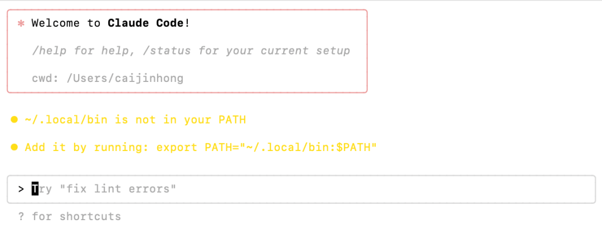
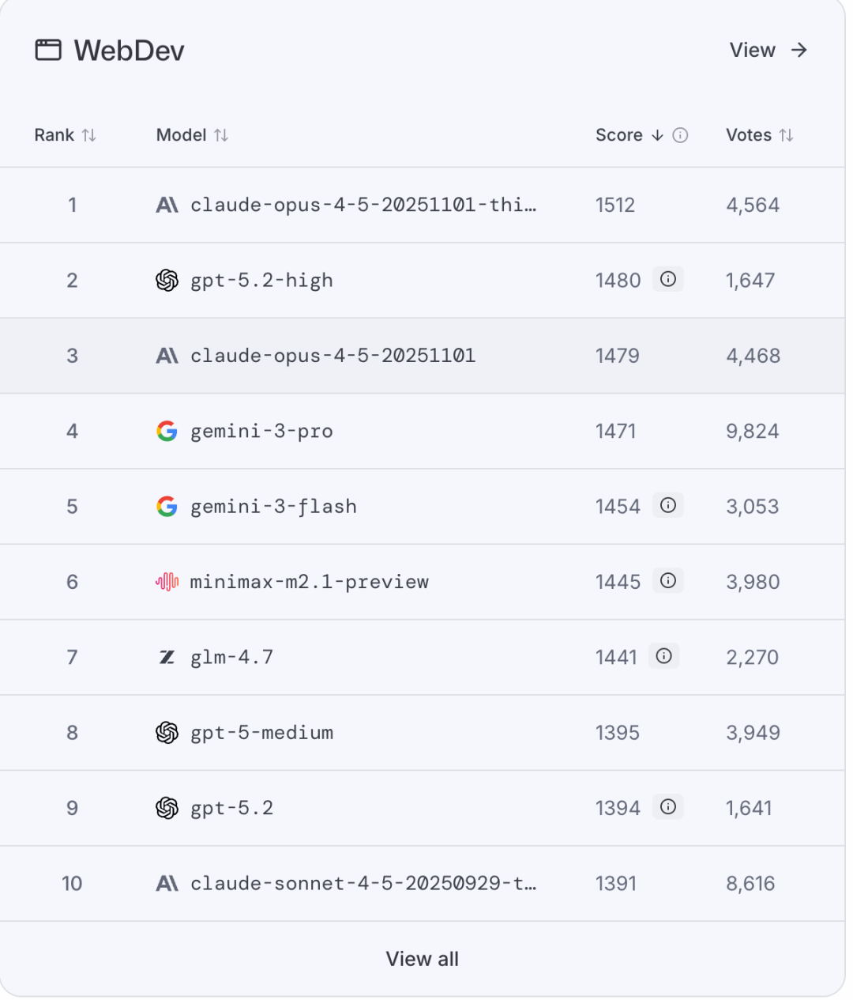
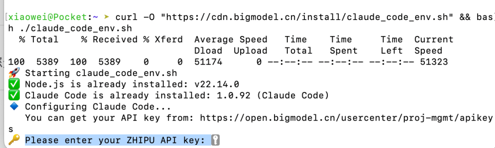
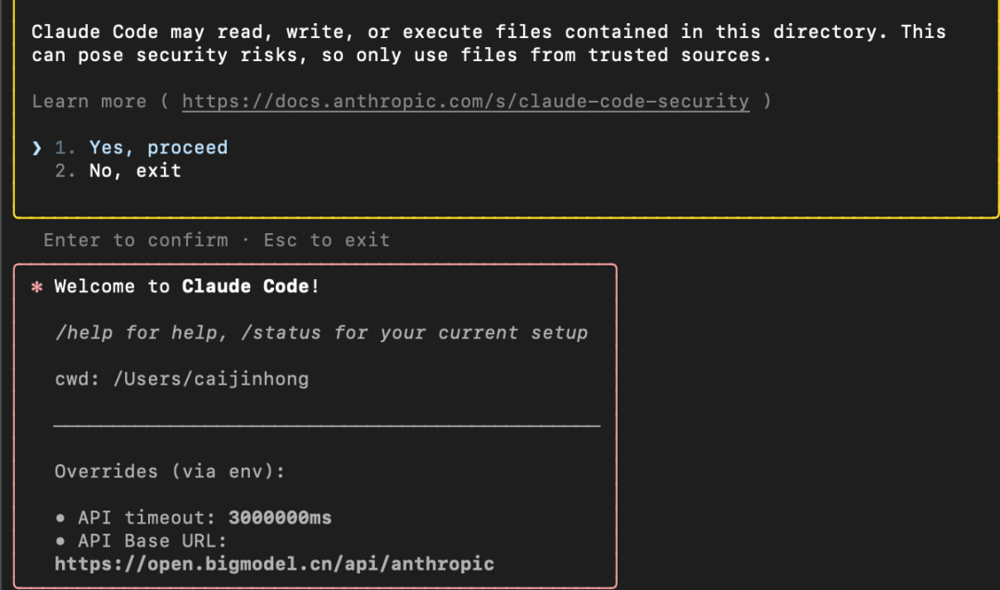
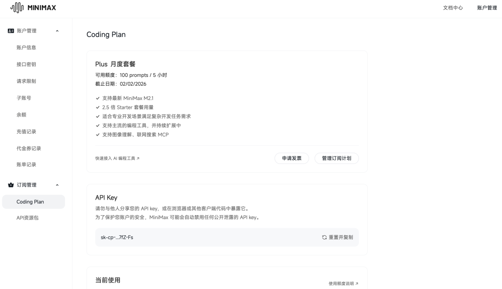
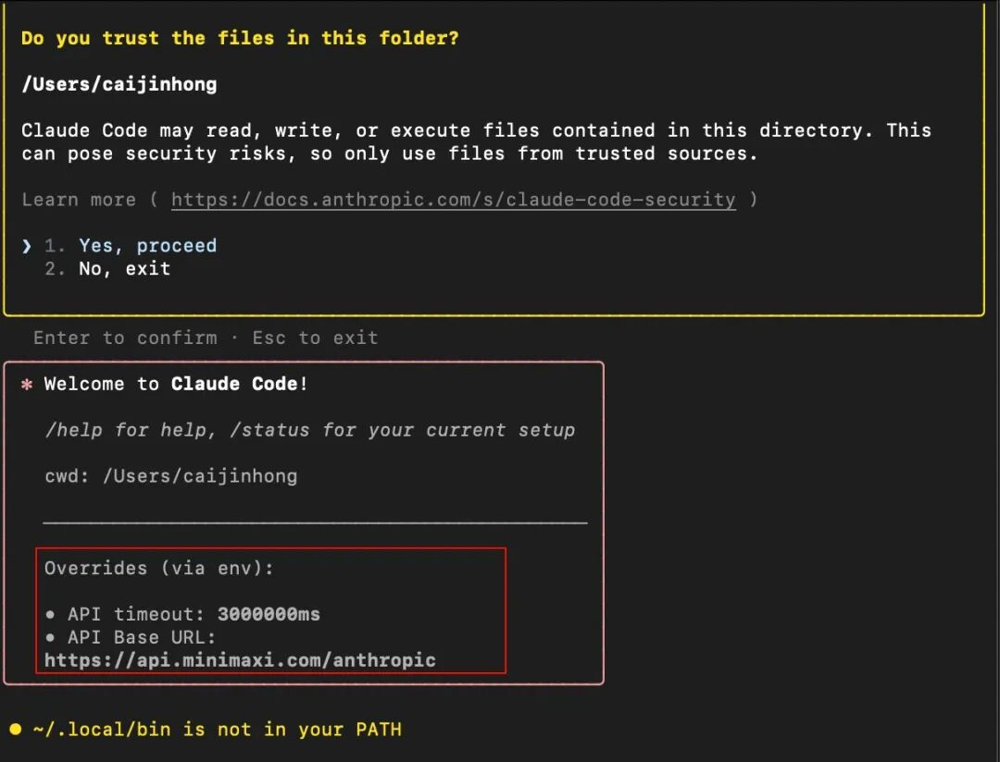
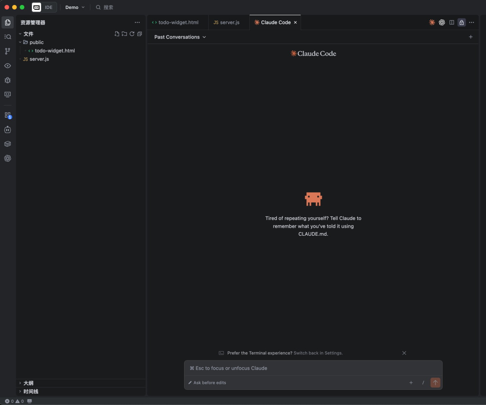

2026年，如果只推荐你学习一个AI工具，我一定强推Claude Code。
很多人一听到 Claude Code，下意识就会觉得，这东西肯定和编程有关，只适合程序员。
但如果你真是这么理解的，那你将错过这个潘多拉魔法。
Claude Code 表面上看是写代码的工具，但它并不是专门给程序员用的，而是一个离计算机非常近的工具。也正因为离得足够近，它能做的事情反而变得非常多。只要是计算机能完成的事，理论上它都可以参与其中。
你可以把它当成工作助手，帮你处理那些重复、繁琐但又不得不做的事情；也可以把它当成学习搭子，陪你一起试错、拆解问题、验证想法；当然，你也可以用它来写代码，但这并不是前提条件。
武侠小说里常常有一个设定，真正厉害的武功，从来不是招式最多的那一种，而是最基础、最朴素的功法。因为它不限制你，反而给了你最大的发挥空间。Claude Code 对我来说，就是这样的一种工具。它没有帮你预设好你应该做什么，而是站在最接近计算机的位置，把选择权交还给你。
所以，这并不是一篇教你学编程的文章。
而是一次尝试，让你第一次真正把 AI 当成一个可以一起干活的工具。
而且我相信，这个工具适合大部分人。
你不需要看一行代码，也能学会怎么用它。
这次我先教会你如何拿起这把武器。
Claude Code安装
如果你之前用过 Cursor、Trae、Qoder 这类工具，那只需要一步，将以下的内容发给AI助手，让AI帮你安装。
https://docs.anthropic.com/zh-CN/docs/claude-code/overview 参考文档，帮我安装Claude code
过程中可能需要你进行授权。
如果没有用过，那也没关系。
打开你的终端（Mac是终端，windows是powershell或者CMD）
Mac命令：
curl -fsSL https://claude.ai/install.sh | bashWindows PowerShell：
irm https://claude.ai/install.ps1 | iexWindows CMD：
curl -fsSL https://claude.ai/install.cmd -o install.cmd && install.cmd && del install.cmd成功以后，会提示：Claude Code successfully installed。
然后在终端里输入：Claude。
回车后出现Welcome to Claude Code。

这样就成功了，如果你本身订阅了Claude，直接输入 /login。
回车后选择Claude account with subsription，可以直接用订阅账号的额度。
但claude最强的模型太贵，而且对于国内用户来说不能直接使用。
模型接入
接下来推荐两个国产的大模型，分别是GLM 和 minimax。
GLM最新的4.7模型，minimax最新的M2.1模型，它们在 lmarena 排行榜上的表现已经超过了 GPT-5.2，目前分别排在第 6 和第 7 位。

如果你对模型的使用不是很苛刻，不一定非得用claude opus 4.5的thinking模型。
我自己日常用 GLM 4.7 开发一些小项目，完全够用。
以下两个二选一进行配置。
GLM
第一步：获取 API Key
访问 https://open.bigmodel.cn/，进行注册/登陆。
之后点击右上角的控制台 -> API Key -> 添加新的API Key。
复制好这个Key。
第二步：一键配置 Claude Code
打开终端，执行下面这条命令：
curl -O "https://cdn.bigmodel.cn/install/claude_code_env.sh" && bash ./claude_code_env.sh终端上会提示，Please enter your ZHIPU API key。
这时候把刚才创建的API Key粘贴上去，回车。

第三步：验证是否成功
回车后，再次输入claude。
如果你看到配置里的 baseUrl 出现了 bigmodel，说明已经是在用GLM的模型了。

需要注意的是，GLM 需要订阅，否则会有速率和次数限制。
目前他们推出了 Coding Plan，首月 20 元，用量大概是 Claude Pro 的 3 倍，价格只有 1/7。
普通用户其实非常够用了。
🚀 用这个链接进行购买可以减少百分之10的金额。
https://www.bigmodel.cn/glm-coding?ic=Y1HZYCZUPU
20元的Lite套餐，每5小时大概是120次prompts，对普通用户应该是相当够用了。
Minimax
先上套餐，月度套餐中，价格最低的是9.9一个月，但是每5小时只有40 prompts。如果只想体验一下的用户可以选择这个。
🚀 用该邀请链接可以享受9折优惠：
https://platform.minimaxi.com/subscribe/coding-plan?code=JfQALRYdEL&source=link
订阅完以后，访问https://platform.minimaxi.com/user-center/payment/coding-plan
在这里复制API Key。

修改 claude code的配置文件。
打开 settings.json 文件：
- mac的路径是：~/.claude/settings.json
- windows的路径是（用户名需要替换）：C:\Users\你的用户名\.claude\settings.json
把下面内容整体覆盖进去，把 <MINIMAX_API_KEY> 换成你自己的 Key：
{
"env":{
"ANTHROPIC_BASE_URL":"https://api.minimaxi.com/anthropic",
"ANTHROPIC_AUTH_TOKEN":"<MINIMAX_API_KEY>",
"API_TIMEOUT_MS":"3000000",
"CLAUDE_CODE_DISABLE_NONESSENTIAL_TRAFFIC":1,
"ANTHROPIC_MODEL":"MiniMax-M2.1",
"ANTHROPIC_SMALL_FAST_MODEL":"MiniMax-M2.1",
"ANTHROPIC_DEFAULT_SONNET_MODEL":"MiniMax-M2.1",
"ANTHROPIC_DEFAULT_OPUS_MODEL":"MiniMax-M2.1",
"ANTHROPIC_DEFAULT_HAIKU_MODEL":"MiniMax-M2.1"
}
}配置完成后，在终端运行claude。
如果 baseUrl 显示的是 minimax，并且能正常对话，说明配置成功。

插件推荐
如果你不喜欢这种命令行的模式，推荐在 vscode/trae/cursor 等 IDE中使用 Claude Code 插件。
是以一个chatbot的形式，和Claude code进行交互，相比于终端命令行输入的方式，这种对于小白用户来说更加的友好。

Ending
从这一刻开始，Claude Code 不再只是一个工具，而是一个你可以长期合作的搭档。你可以用它来做 PPT、整理资料、处理文件、自动化那些你早就不想再亲手去做的重复工作。你可以是产品经理、运营、创作者、学生，甚至只是一个想把电脑用得更顺的人，它都能参与进来。
你不需要给自己贴上“程序员”或者“非技术人员”的标签。在 Claude Code 面前，这些身份并不重要。重要的是，你终于拥有了一个真正靠近计算机、却又能听懂人话的入口。
而这，还只是开始。
接下来我会继续分享，如何在 Claude Code 里使用 subagent、skills，让它更好的帮你完成现实世界中的任务，一步步把你的双手解放出来。
当你走到这一步的时候，你会明白一件事：
你学到的不是某个 AI 工具，而是一种全新的工作方式。
最后提一下，我最近想做一个 AI 工具共创使用群，不是聊概念、追热点，而是大家一起把 AI 工具真正用好。
一起试工具、跑场景、拆用法、变现，把 AI 变成日常工作里顺手、变现的工具、靠谱的搭档。
如果你想加入，后台私信我，我拉你进群。